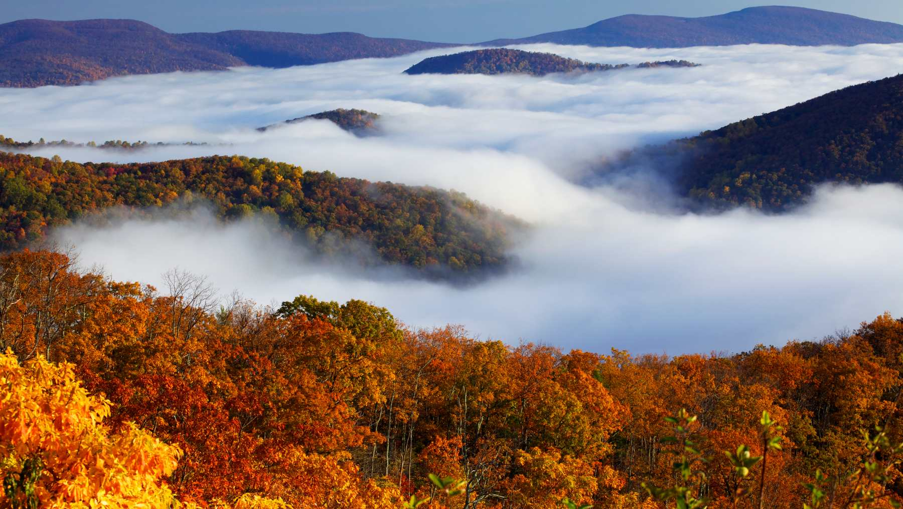

Tokio ofrece una mezcla fascinante de modernidad y tradición, destacando lugares imprescindibles como el histórico Templo Senso-ji, el bullicioso cruce de Shibuya, los rascacielos de Shinjuku y la cultura otaku en Akihabara. Imprescindibles incluyen vistas panorámicas desde Tokyo Skytree, el santuario Meiji, jardines tradicionales y la bahía de Odaiba
Rusia, el país más grande del mundo, destaca por su inmensa diversidad cultural, histórica y paisajística, ofreciendo desde la arquitectura icónica de Moscú y San Petersburgo (como la Plaza Roja y el Kremlin) hasta la naturaleza extrema de Siberia y el lago Baikal. Es un destino fascinante para amantes de la historia, la literatura, el ballet y los inviernos espectaculares.

Visitar los montes Apalaches es ideal por su inigualable belleza natural, senderismo de clase mundial y rica cultura histórica. Con más de 480 millones de años, ofrecen densos bosques, montañas ancestrales, parques nacionales como Great Smoky Mountains y una paz inigualable, perfectos para el senderismo, camping y la observación de fauna.